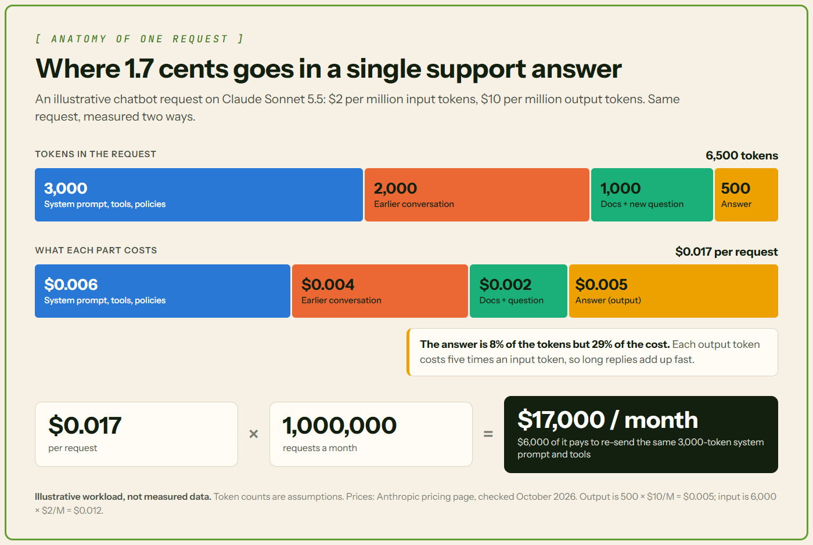

The True Economics of Inference: FinOps Strategies for Cutting Token Costs by 60% in Production
Where AI bills come from, and how to bring them down.
💸 Why AI bills surprise teams
The first bill from an AI provider usually looks tiny: a prototype answers a few hundred test questions for a few dollars. Then the feature launches, traffic climbs toward a million requests a month, and the bill climbs too. The cause is rarely one big mistake. It's small costs, repeated millions of times.
🧩 How inference costs work
Tokens are what you pay for
Inference is the moment a trained AI model answers a request. You pay for each one.
Models read and write text in small pieces called tokens. Google's Gemini docs say a token is about four characters, and 100 tokens equal roughly 60 to 80 English words.
Input and output have different prices
Input tokens (also called prompt tokens) are everything you send to the model. Output tokens (also called completion tokens) are everything it writes back. Output costs more. Claude Sonnet 5.5 charges $2 per million input tokens and $10 per million output tokens, and OpenAI prices GPT-6.1 Sol the same way. One output token costs as much as five input tokens.
📖 Words you'll see in this article
| Term | What it means |
|---|---|
| Token | A small chunk of text, roughly four characters of English; the exact split varies by model. You're billed per token. |
| System prompt | Instructions your app sends with every request, such as "answer politely and follow our refund policy." |
What one request really costs
Besides the user's question, a support chatbot sends a system prompt, tool definitions (descriptions of actions the AI can take), help articles and the conversation so far. Here's an illustrative request:
- 3,000 tokens of system prompt and tool definitions
- 2,000 tokens of earlier conversation
- 1,000 tokens of help articles plus the new question
- a 500-token answer
Input costs $0.012 and output $0.005, so the request costs 1.7 cents. The answer is under 8% of the tokens but 29% of the cost.

📈 Why costs grow in production
Small numbers, multiplied
At a million requests a month, 1.7 cents becomes $17,000. The system prompt and tool definitions, the same on every request, cost $6,000 of that.
Every chat turn re-sends the whole conversation
Anthropic's documentation says you "always send the full conversational history" with each request. Even APIs that store the chat for you, like OpenAI's, still bill earlier turns as input.
The chat below starts with a 3,000-token system prompt and adds 500 tokens per turn, question plus answer. After ten turns it holds 8,000 tokens. But each turn re-sends everything before it, so you pay for 54,000 input tokens, and 158,000 at 20 turns.
Thinking tokens you never see
Many newer models reason privately before answering, and you pay for it. OpenAI says reasoning tokens "are billed as output tokens" and aren't visible in the response. Anthropic bills thinking as output too, and its API reports how many output tokens were thinking.
Agents call the model again and again
An AI agent works in steps, calling the model after each one with the growing history. Anthropic's engineers note that agentic systems "often trade latency and cost for better task performance."
🧮 What FinOps means for AI
The FinOps Foundation describes FinOps as "an operational framework and cultural practice which maximizes the business value of technology." For AI, that means measuring each feature's tokens, giving each cost an owner, and weighing it against its value.
The Foundation's AI guidance suggests tracking cost per inference. Better still, track cost per successful task: a cheap answer that gets retried or handed to a human wasn't cheap.
🛠️ Six ways to cut token costs
1. Cache the parts that repeat
Prompt caching lets the provider reuse work when the start of your request is identical every time, like your system prompt. It's like keeping a book open at the right page.
On Claude Sonnet 5.5, a cache read costs $0.10 per million tokens, 5% of the normal input price. Writing to the cache costs 25% extra, and entries last five minutes by default. OpenAI discounts cached input by up to 95%. The cached part must match exactly, so put fixed instructions first. In the animation, caching cuts the chat from $0.143 to $0.059.
2. Send less context
Keep the last few chat turns as they are and replace older ones with a short summary. If you search help articles, send the three best matches instead of ten.
3. Keep answers short
Output tokens cost more, so shorter answers save real money. Ask for concise replies, and set a max_tokens limit as a safety net. An answer that hits the limit is cut off, often mid-sentence, marked with a max_tokens stop reason.
4. Send easy requests to a smaller model
Model routing means picking a model for each request. Claude Haiku 5.5 costs $0.10 per million input tokens and $0.50 per million output tokens (for prompts up to 100,000 tokens), one twentieth of Sonnet 5.5's price. A small classifier can send simple questions, like password resets, to the cheap model.
In 2024, LMSYS's RouteLLM routers cut costs by over 85% on the MT Bench benchmark while still achieving 95% of GPT-4's performance; the cost reduction is smaller on MMLU (45%) and GSM8K (35%). Test on your own requests, and pass anything the small model gets wrong to the bigger one. For more, see Large Language Models vs Small Language Models.
5. Batch work that can wait
Jobs like nightly reports or document tagging can go through a batch API at half price. Anthropic says most batches finish within an hour, but they can take up to 24.
6. Two more options to know
Semantic caching reuses a saved answer when a new question means the same as an old one. The vCache researchers warn that fixed matching thresholds "result in unexpected error rates."
Quantization stores a self-hosted model's numbers with less precision. vLLM's docs say FP8 halves model memory and raises throughput by up to 1.6 times on GPUs that support it, with minimal impact on accuracy. For the hardware side of these costs, see The Hidden Infrastructure Behind Every AI Answer.
📋 The six techniques at a glance
| Technique | Best for | Watch out for |
|---|---|---|
| Prompt caching | Long instructions sent every time | Any change in the cached text |
| Less context | Long chats, document search | Dropping something the model needs |
| Shorter answers | Chatty replies | Answers cut off at the limit |
| Model routing | Many simple questions | Wrong answers from the small model |
| Batching | Work that can wait | Results can take up to 24 hours |
| Semantic caching, quantization | FAQs, self-hosted models | Wrong matches, lost accuracy |
🎯 Can you really cut costs by 60%?
A worked example
This is a calculation, not a measured result. Start from the $17,000-a-month chatbot and apply four changes in order:
- Cache the system prompt and tool definitions, with 95% of requests hitting the cache: $11,660
- Trim chat history from 2,000 to 1,200 tokens: $10,060
- Shorten average answers from 500 to 350 tokens: $8,560
- Send 30% of requests to Haiku 5.5, re-answer 1 in 10 of those on Sonnet, and add a small routing step: $6,424
That's 62% less than the starting bill. OpenAI's GPT-6.1 Sol and GPT-6 Luna list exactly the same input, output and cache prices as Sonnet 5.5 and Haiku 5.5, so at the same cache hit rate the math is the same there.

When the assumptions change
With fewer cache hits (70%), smaller trims, only 15% of requests routed and a quarter of those passed back to Sonnet, the saving drops to about 36%. Without routing, it stops near 50%. So 60% is possible for a busy chatbot with long, repeated instructions, but it isn't a guarantee or an industry standard.

📏 Where to start
- Measure first: log input, cached, output and thinking tokens per request, and whether the task succeeded.
- Turn on caching, with fixed instructions at the start of the prompt.
- Trim history and documents, and ask for shorter answers.
- Test routing on real traffic before moving users to a smaller model.
Change one thing at a time, and watch quality and latency too.
✅ Conclusion
An AI bill is simply tokens multiplied by price. Most of the waste hides in text sent again and again, and in answers longer than they need to be. A 60% cut is possible for some workloads, but the number that counts is the one you measure on your own.